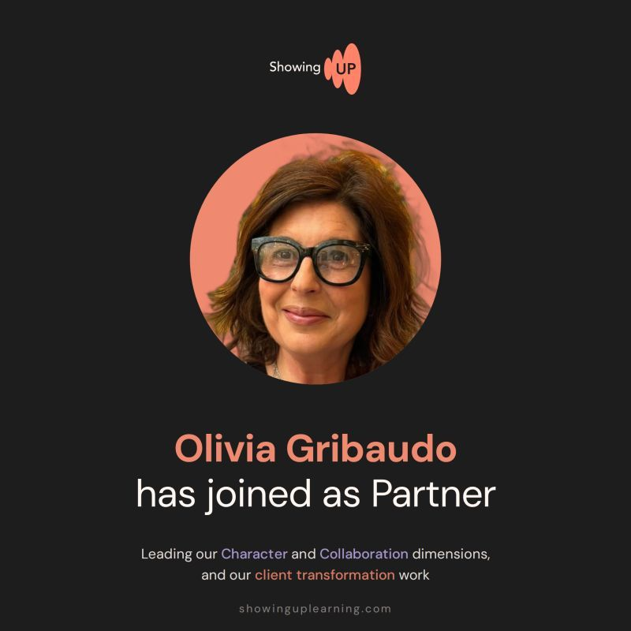

7 August 2026
Olivia Gribaudo joins as Partner
We've had the privilege of Olivia Gribaudo contributing to our client work in the past years, which is why it's beyond exciting to share the official joining of our team as a Partner.
Olivia has spent her career on the human side of change, in the belief that organisations transform when their people do. Over fifteen years at Diageo, and since then as a consultant to global organisations across financial services, technology, energy and retail, she has led everything from organisational redesign to full-scale culture change. Her gift is bringing clarity to the complex and the ambiguous. At Showing Up, Olivia leads our Character and Collaboration dimensions and our client transformation work. She speaks five European languages and loves theatre, dance, and travel. Welcome, Olivia. We are beyond lucky to have you as part of the team.
Welcome to Showing Up | Developing brilliant consulting teams.

View this post on LinkedIn →